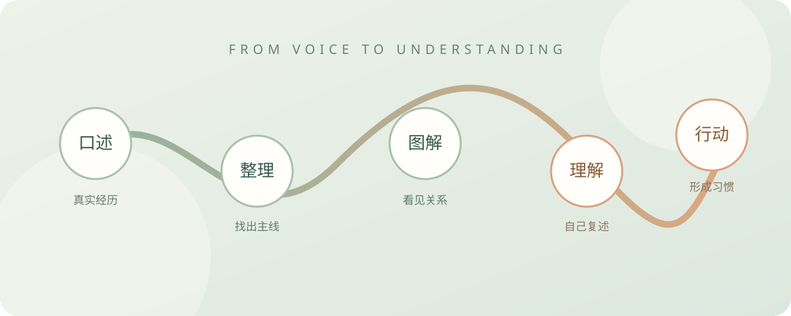
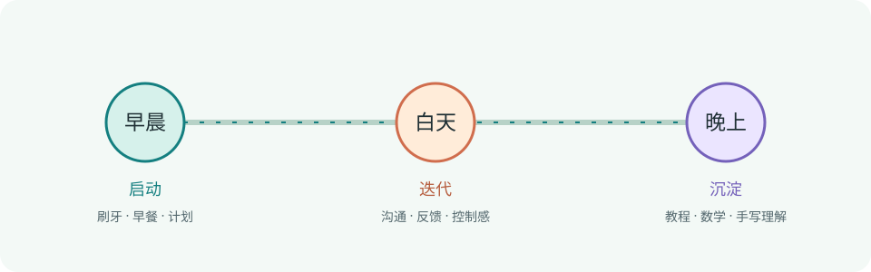
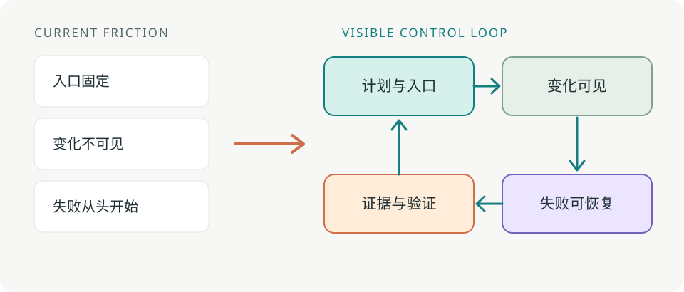
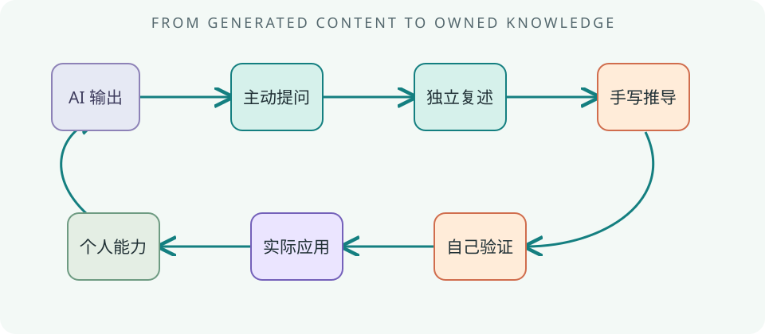

DAILY REFLECTION · 2026.11.20
从 AI 产出到个人认知
今天做了很多内容建设，也产生了一个更重要的疑问：当 AI 能够快速替我生成文章、题解和代码，我怎样才能确保这些成果真正变成自己的理解、判断和行动？
今天的主线：产出很多，不代表真正掌握
今天的经历横跨早晨习惯、白天工作系统的迭代，以及晚上的知识体系建设。把这些事情连起来看，背后其实是同一个问题：如何减少行动和学习过程中的摩擦，同时不把自己的思考交给机器代替。

01 · 早晨：先降低启动成本
闹钟响后没有立刻起床，问题不是不知道应该起床，而是在床上给了自己太多犹豫空间。下次闹钟一响，先起身刷牙，不等待动力出现。

早晨启动
闹钟响后先刷牙；吃两个鸡蛋；尽量在 9 点左右上楼，避开人流高峰。
通勤思考
提前梳理当天计划，通过对话激发新想法；同时给眼睛和大脑留出放松时间。
晚上沉淀
继续完善教程和数学体系，但更重要的是亲自理解、手写和验证。
这个小调整背后的原则是：不要把行动寄托在情绪上，把第一个动作设计得足够简单。
02 · 白天：反馈必须变成可见的改进
白天主要是在和大家沟通，根据问题和测试反馈迭代系统。今天发现的三个缺口都指向同一件事：流程没有把状态和变化表达清楚。
入口过于固定
默认使用 spec.md，不同任务缺少灵活选择入口的能力。
变化不可见
反馈后做了哪些调整、影响什么、验证了什么，没有被清楚呈现。
失败无法续跑
NG 后容易从头开始，不能从具体 Skill 或失败节点恢复。

03 · AI 编程：把黑盒重新变成可检查的过程
使用 AI 写代码时，控制感越来越弱。为了确认它是否真的完成任务，需要反复索要证据，过程有时像开盲盒。
真正需要的是一条可见的执行链，而不是更多“已经完成”的口头承诺：
- 开始前：说明计划、范围、约束和验收标准。
- 执行中：展示关键步骤、文件变化、失败位置和决策理由。
- 结束时：列出具体改进、实际验证结果和仍未解决的问题。
- 失败后：保留上下文，允许从指定 Skill 或节点恢复。
对我来说，AI 的价值不应该是替我完成更多不可见的工作，而是让我能够更清楚地理解、检查和控制整个过程。
04 · 知识系统：让复杂内容变得看得见
晚上继续完善教程，并把数学题库按统一结构集成进去。算法尤其适合可视化：数组元素如何变化、双指针如何移动、二分边界如何更新、树如何遍历，都可以被图解直接呈现。
我希望逐步建立机器学习、强化学习、大模型、Agent、数学和算法的可视化知识系统。但系统本身只是工具。文章存在仓库里，并不意味着知识已经存在于我的头脑里。
我还计划编写 PyAgent 自动化脚本，让各个 tutorial 依次运行完整流程，争取明天完成并在周末自动运行。
05 · 最重要的一步：把 AI 内容变成自己的能力
最让我担忧的是，很多题库、博客和 PDF 虽然已经生成，但我没有真正深入理解和消化。拥有内容，不等于掌握知识；能够复述、验证和应用，才说明它开始成为自己的能力。

选择一个真正重要的知识点
不要试图一天掌握整个知识库。选一个今天真正想弄懂的问题，明确这次学习的边界。
合上网页，先独立回忆
不看 AI 的答案，用自己的话解释概念。讲不清楚的部分，就是下一步要补上的理解缺口。
拿笔把逻辑写下来
写出核心结构、公式、推导步骤和一个小例子。手写会迫使自己组织信息，而不是只产生熟悉感。
用例子检验自己的解释
自己构造数据，手动计算或运行代码。让解释接受反例和边界情况的检验。
把知识带回真实生活
把学到的方法用于工作、代码、沟通或日常决策。能够改变行动，知识才开始形成长期价值。
AI 应该放大我的思考能力，而不是替代我的思考过程。
06 · 明天：让想法落到行动
- 带上泳衣、泳裤，安排游泳。
- 去公司补班，积累工时。
- 优先完成 PyAgent 教程自动化脚本，为周末运行做准备。
- 挑选一个知识点，自己手写原理、推导和例子。
- 继续梳理系统入口、反馈变化展示和 NG 节点恢复问题。
明天不需要再证明自己能让 AI 生产多少内容。更值得关注的是：有没有一项知识真正被自己理解，有没有一个想法真正变成行动。